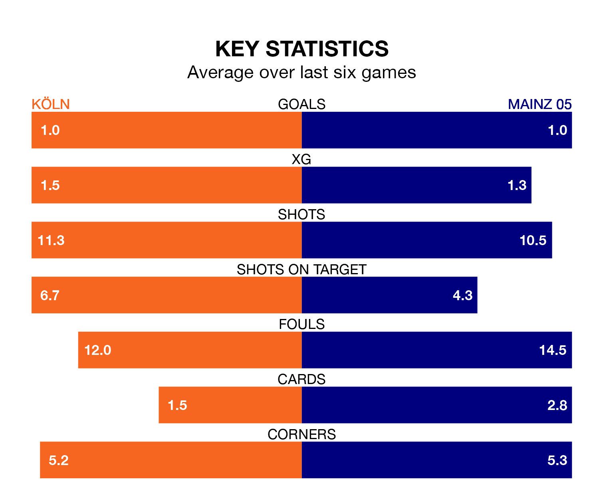

Struggling Köln face Mainz 05 at RheinEnergieStadion on Sunday looking to build on a win in their last league outing.
After securing all three points with a 1-0 victory over Darmstadt 98 on December 1, Köln sit 15th in the Bundesliga.
They travel to play a Mainz 05 side 17th in the standings, who lost in their last match, 1-0 against Freiburg, on December 3.
In the last 10 years, Köln and Mainz 05 have played each other on 16 occasions. Köln won four of them, Mainz 05 five, and they drew seven times.
On average, Köln scored 1.1 goals and Mainz 05 1.4 in those matches.
Their last meeting was on April 15, when they played out a 1-1 draw.
Köln are in mixed form in the Bundesliga, with two wins and two draws from their last six games.
With a win and three draws over that period, Mainz 05's form is slightly worse – they have taken six points from 18, compared to the home side's eight.
With 10 goals in 13 games so far this season, Köln are the league's lowest scorers with 0.8 goals per game. And they are conceding more than average, letting in 24 goals at a rate of 1.8 per game.
The visitors are also below average scorers, with 0.9 goals per game, compared to a league average of 1.7. They have conceded 2.0 goals per game.
